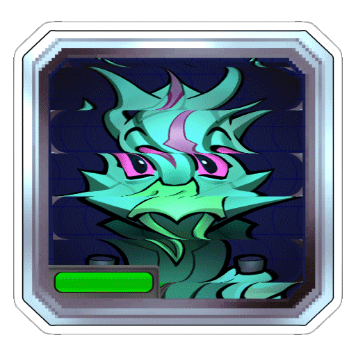

<div *ngIf="flag" style="backdrop-filter: brightness(0.4);" class="h-100 w-100 position-absolute top-0 start-0 d-flex justify-content-center align-items-center text-center">
    <div class="bg-primary px-4 pt-4 rounded-4">
        
        <p class="fs-2 py-2">¡Perdiste!</p>
        <button class="btn btn-danger m-2" (click)="manejador_reintentar()">Intentar de nuevo</button>
        <button class="btn btn-info m-2" routerLink="" >Volver al menú principal</button>
    </div>
</div>
